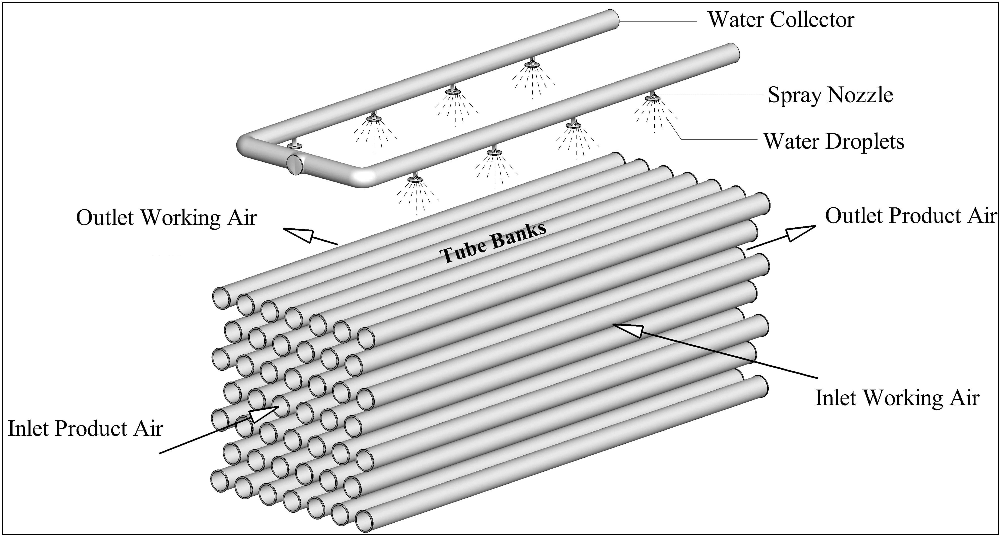
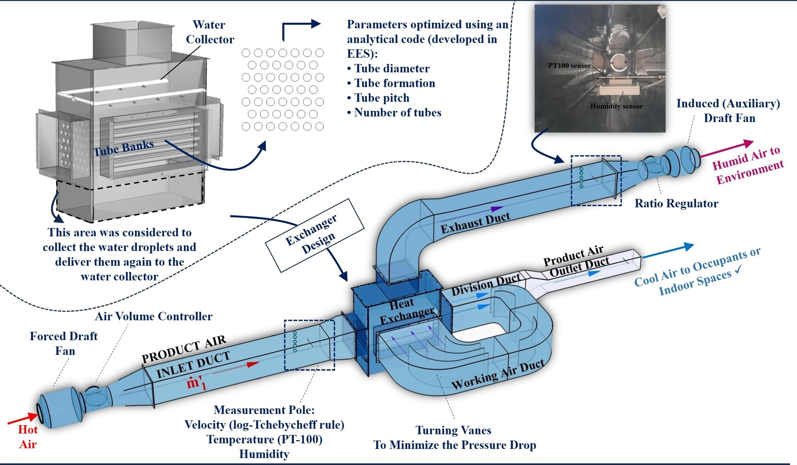

My Role
- Funding (100% personal)
- Analytical analysis for design optimization
- Industrial drafting
- Graphical works
- Fabrication and assembly
- Sensor installation and calibration
- Validation and tests
An IEC is a heat and mass exchanger cooling an airstream, Product Air, without adding moisture. In a tubular configuration, the Product Air flows inside the tubes, while another airstream, Working Air, flows outside the tubes. The direct contact between Working Air and droplets at the shell side produces a cooling potential to absorb heat from the internal flow, Product Air.

During a period of two years, my thesis introduced a new configuration of the tubular exchanger, enhancing cooling capacity
and eliminating the need for maintenance (as a result of fouling).
The following paper represents the results:
Rahmati, B., Jadidi, A. M. & Valipour, M. S. (2024). “Enhancing the performance of an M-cycle based tubular indirect evaporative cooler by mesh screens.”
International Communications in Heat and Mass Transfer
(Read the article here)
